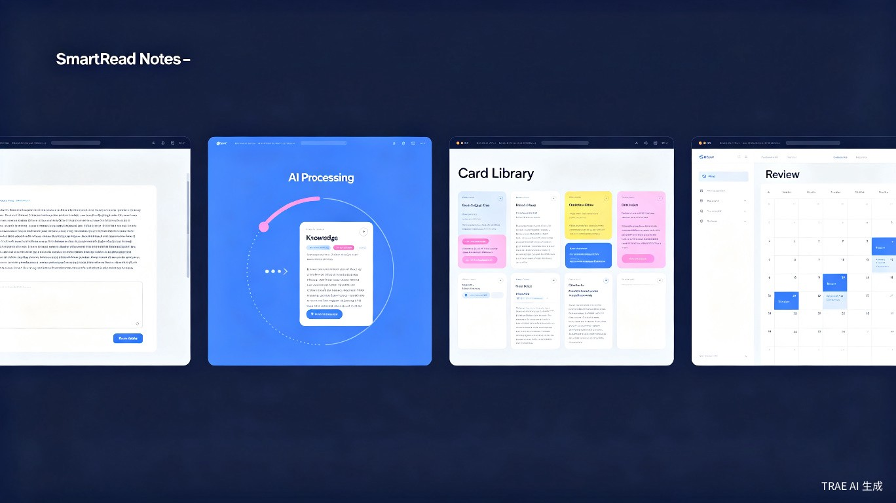
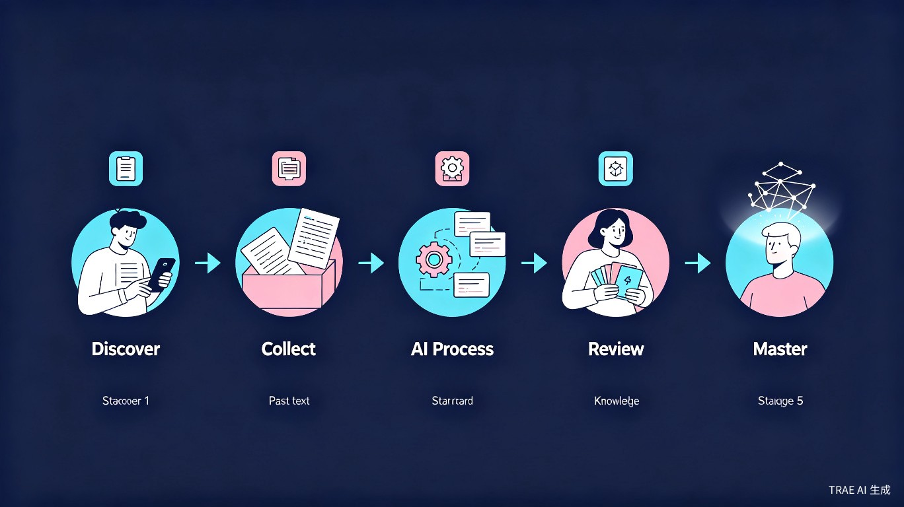
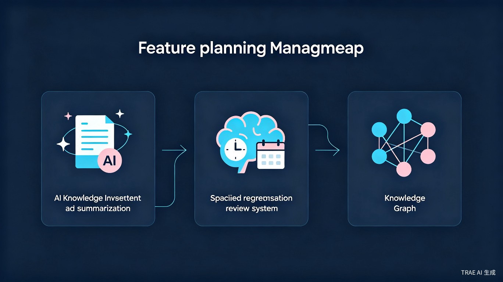

一款基于 Web 的 AI 知识管理工具，面向学生和职场人，帮助用户将碎片化阅读内容自动整理为结构化知识卡片，并基于科学遗忘曲线安排智能复习，真正实现"收藏即学习"。
我自己就是"收藏癖"重度患者，Notion、印象笔记、微信收藏夹里存了上千条内容，但很少回头看。直到发现很多收藏链接已经失效，才意识到"收藏不等于学习"。我希望有一个工具，能让"收藏"自动变成"知识"，并且真正帮我记住。
Web 应用（响应式设计，支持 PC 和移动端浏览器访问），打开即用，无需注册登录。
以下展示了智读笔记的核心交互流程：从内容输入、AI 解析、知识卡片管理到智能复习的完整闭环。

粘贴文章链接或文本，AI 自动提取核心观点、生成摘要、打上智能标签，3 秒完成从"收藏"到"知识卡片"的转化。
基于艾宾浩斯遗忘曲线，自动安排复习计划。每天打开即可看到"今日待复习"，支持主动回忆模式。
所有笔记卡片以图谱形式呈现，标签关联、内容相似度自动聚类，帮助发现知识盲区与兴趣脉络。
从用户发现好内容到最终掌握知识，智读笔记贯穿全流程，让学习自然发生。

用户在日常浏览中看到有价值的文章、论文或教程，产生"这个内容有用，要保存下来"的需求。
打开智读笔记，粘贴文章链接或正文文本。无需手动整理格式，AI 即将接管后续流程。
AI 自动分析文本，提取核心观点生成摘要，智能识别关键词并打标签，生成结构化知识卡片存入知识库。
系统基于遗忘曲线自动安排复习计划。用户每天打开即可看到"今日待复习"卡片，采用"先回忆后查看"的主动回忆模式强化记忆。
通过知识图谱回顾学习脉络，发现知识盲区，形成系统化的个人知识体系。
智读笔记的功能架构围绕"入库-整理-复习-可视化"四大核心模块展开。

| 模块 | 技术方案 | 说明 |
|---|---|---|
| 前端框架 | HTML + Tailwind CSS + Vanilla JS | 轻量，无需构建工具 |
| 数据存储 | localStorage / IndexedDB | 本地存储，无需服务器 |
| AI 摘要 | 调用 TRAE 内置 AI 能力 | 文本分析与智能标签 |
| 图谱可视化 | ECharts / D3.js | 知识关联关系展示 |
| 部署 | GitHub Pages / Vercel | 免费，一键部署 |
gantt
title 智读笔记开发路线图
dateFormat YYYY-MM-DD
axisFormat %m/%d
section 核心功能
项目初始化与框架搭建 :done, a1, 2026-06-20, 2d
AI 知识入库功能 :active, a2, after a1, 3d
智能复习系统 : a3, after a2, 3d
section 体验优化
知识图谱可视化 : b1, after a3, 3d
UI 打磨与响应式适配 : b2, after b1, 2d
section 上线
部署与测试 : c1, after b2, 1d
不是简单展示笔记列表，而是采用主动回忆模式——先隐藏答案让用户回忆，再点击展开查看。这种基于认知科学的方法，记忆巩固效率是被动浏览的 3 倍。
打开网页就能用，无需注册、登录、配置。所有数据存储在浏览器本地（localStorage），隐私零风险，也不会因为忘记密码而丢失数据。
从内容入库（自动摘要 + 智能标签）、知识整理（自动分类 + 关联推荐）到复习策略（遗忘曲线排期 + 薄弱点识别），AI 贯穿知识管理的每一个环节，而非仅作为锦上添花的辅助功能。